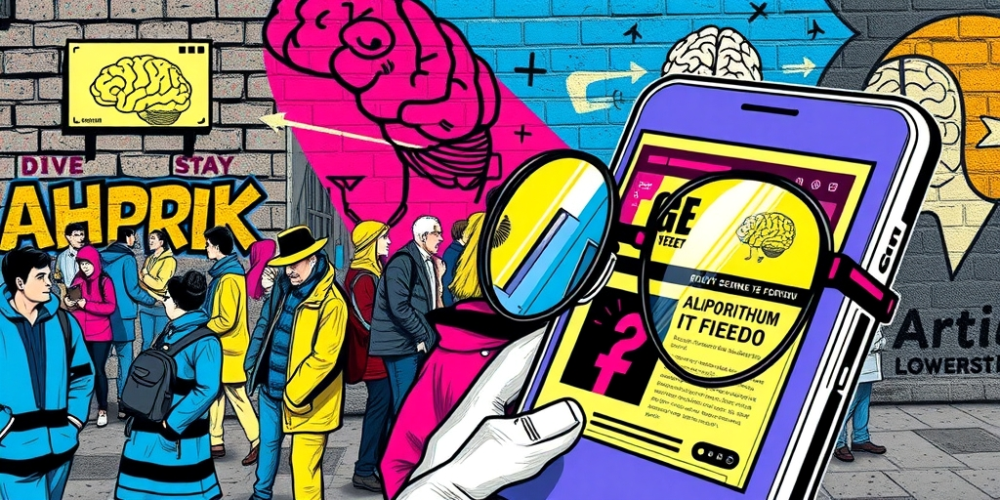

小汪老师的成长洞察 · 属于你的成长专栏
你收藏的那些犀利吐槽，不是在替你说出真相，而是在替你咽下所有不敢说的愤怒。毒舌内容的流行，暴露的不是你的真实品味，而是你情绪通道的系统性瘫痪。
职场要求你专业冷静，家庭要求你稳重得体，公共场合要求你礼貌克制。儿童可以哭闹，青少年可以叛逆，成年人的愤怒、嫉妒、鄙视，全被压进了日常的褶皱里。社会对成年人的情绪表达，有一套严苛的隐性规范。
毒舌内容成了这套规范制造的压力锅里，找到的泄压阀。有人替你说了刻薄话，你只需要点赞转发。这个过程干净、安全、不留把柄。它不是你在表达，而是你在借用别人的嘴，完成一次安全的排气。越懂事的成年人，排气的需求越强烈。
毒舌言论的核心结构几乎千篇一律：精准嘲讽某一类人，读者自动默认自己站在批评者那一侧。这是一种极其廉价的社会区分机制。你不需要真正取得成就，不需要付出努力，只需要认同那句刻薄的话，就能短暂获得“我和那种人不一样”的优越感。
当社会流动放缓，向上通道变窄，这种低成本优越感的需求就会显著上升。转发一句毒舌，成了一种低成本的身份宣言：你看，我多清醒，多不装。刻薄在当下被误读为勇敢，犀利被等同于真实。你买的不是洞察力，而是一张临时通行证。

毒舌内容通常立场鲜明、结论前置，省去了你独立思考的成本。你不需要分析问题的全貌，只需要接受一个现成的、带刺的结论。算法推送会进一步强化这个过程：你看的毒舌越多，推给你的越精准，越让你觉得“这个人说出了真相”。
实质上，这是用别人的刻薄，来填补你自己的思考空白。同时，它给你制造了一种“我很有洞察力”的错觉。真正的批判性思维，从来不提供这种爽感。它只提供不适，甚至会挑战你原有的认知。但大多数人宁愿要爽，不要真。
一个社会里毒舌内容越流行，往往意味着两件事同时发生：公共的情绪出口越来越少，正常的批评与异见空间越来越窄。当严肃讨论被挤压，戏谑和嘲讽就成了唯一被允许的表达。毒舌不是在解构权威，它只是让人在情绪上“爽”一下，然后原地不动。
你笑得最爽的那句毒舌，往往藏着你最不敢正面说出口的那句话。这不是坏事。但如果只停在“看毒舌”这一步，你的愤怒、不满和质疑，就永远只能寄生在别人的嘴巴里。你依然安全，但也依然被驯化。
写给你的话
下次你被一句毒舌逗笑时，停一下。问问自己：这句话触动了我哪根神经？是它说中了真相，还是它替我说出了压抑？前者值得思考，后者只是情绪的转包。真正的表达，不依赖任何人的嘴。当你的愤怒需要别人代劳，你早就把发声的权利交了出去。这不是鼓励你去刻薄，而是提醒你：你自己的声音，本不该这么沉默。
参考资料
[1] 5 weird things people do in love and why, as per psychology (Times of India) https://timesofindia.indiatimes.com/relationships/5-weird-things-people-do-in-love-and-why-as-per-psychology/photostory/131070719.cms
[2] Psychology says people who feel jealous of their spouse’s success aren’t always toxic, sometimes it reveals a hidden identity crisis (The Economic Times) https://economictimes.indiatimes.com/news/international/us/psychology-says-people-who-feel-jealous-of-their-spouses-success-arent-always-toxic-sometimes-it-reveals-a-hidden-identity-crisis/articleshow/131371019.cms
小汪老师的成长洞察 · 属于你的成长专栏